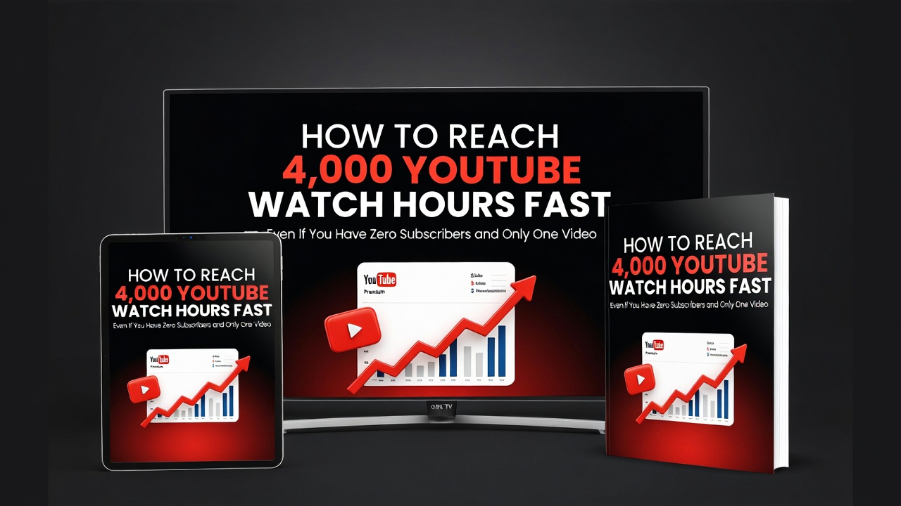
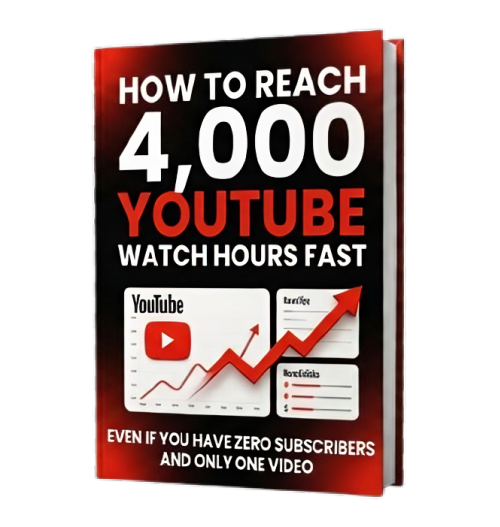
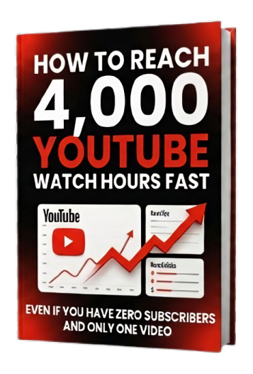

ATTENTION: IF YOU'RE TIRED OF SEEING YOUR WATCH TIME STUCK AT THE SAME NUMBER FOR MONTHS...
How To Get
4,000 Watch Hours
on YouTube Fast in 2026
Stop guessing. Stop hoping for a viral miracle. Discover the human-centered, algorithm-friendly blueprint on how to get 4000 watch hours on YouTube fast, even if you have zero experience.

I know that feeling...
opening YouTube Studio...
And seeing that progress bar barely moving:
"It feels like you're shouting into a void. You're working hard, but the numbers just won't budge."
It's frustrating. You've done everything the 'gurus' told you. You've optimized your tags, you've made better thumbnails... but you're still locked out of the Partner Program.
THE TRUTH NO ONE TELLS YOU...
Most creators fail because they focus on the wrong metrics. They chase views, but they forget about retention and session time.
Without a strategy for how to get 4000 watch hours on YouTube fast, you're just spinning your wheels.
Meanwhile...
There are small channels, few subscribers, few videos... but they manage to reach 4,000 watch hours quickly.
Why? Because they know this.
They use a method that is almost never discussed.
Simple method
A method that even a 10-year-old can do
A method that is more copy-paste than thinking
The Human-Centered Strategy to
Get 4,000 Watch Hours
Faster Than You Ever Imagined
We've distilled thousands of hours of testing into a simple, repeatable system. This is the exact blueprint for accelerating your YouTube watch time without burning out or losing your soul to the algorithm.
Authentic Growth
No bots. No fake views. Just real people watching your content because they love it.
Beginner Friendly
You don't need a fancy studio or a team of editors. Just your passion and this guide.
Proven Results
We've helped hundreds of creators just like you finally hit that monetization button.
The "Old" Way
- Uploading daily for months
- Begging friends to watch
- Buying fake bot views (Dangerous)
- Hoping for a viral miracle
The "4K Watch Pro" Way
- 8-Step Strategic Blueprint
- 100% Organic & Safe
- Results in 14-30 Days
- Unlock Monetization Fast
Is this for
You?
The Passionate Creator
You love making videos, but you're tired of the monetization wall. You want to turn your hobby into a sustainable career.
The Busy Professional
You don't have 40 hours a week to spend on YouTube. You need a streamlined strategy on how to get 4000 watch hours on YouTube fast without sacrificing your life.
The Dreamer
You have a message to share with the world. You want to reach more people and build a community that lasts.

Stop Wasting Months...
Start Getting Paid.
Every day you wait is another day of lost revenue. This is the definitive, 100% organic strategy on how to get 4000 watch hours on YouTube fast. No more guessing, just results.
Join 1,240+ creators who finally broke the monetization barrier
Real Stories from Our Real Experience
"In the past, we often gave up and abandoned old channels that we had built and managed for so long, simply because we never reached the 4,000 watch hours milestone."
Our Past Struggle
Abandoned Channels
"We were often constrained by time to manage our channels seriously, and it felt incredibly frustrating to see watch hours remain stagnant and never increase as expected."
Time Constraints
Stagnant Growth
"Only after discovering this easy method were we shocked at how quickly the watch hours increased, finally breaking through the 4,000-hour mark in less than 4 days!"
The Breakthrough
4,000 Hours in 4 Days
AND NOW THAT METHOD IS IN THIS EBOOK:
THE ULTIMATE GUIDE TO
4,000 WATCH HOURS
Inside, you will find:
-
8 Simple Steps You Can Follow Today
-
No experience & special skills required
-
No expensive tools (100% free tools)
LIMITED TIME BONUS:
YouTube SEO Checklist
Get our private checklist for optimizing every video for maximum reach. (Value: $19 - FREE Today)

This method works even if:
- You only have 10 subscribers
- You have 0 subscribers
- You are a total beginner YouTuber
- You are not good at editing
- You have never gone viral
And here's the craziest part…
You have the potential to reach 4,000 watch hours…
with just 1 video.
"Until finally… 4,000 hours are reached. And monetization is unlocked."
Start Earning: The Secret to Reaching 4,000 Watch Hours
And not only that… Once you master the art of growing your watch time… you can even help other channels… and get paid to accelerate their growth.
Normal Price of This Ebook is $47
And that's still cheap... because 4,000 watch hours can unlock long-term income.
SPECIAL OFFER ENDS IN:
But today you don't have to pay $47
You can get it now for only:
$11.99
100% ACTION-BASED GUARANTEE
If you follow the steps inside this ebook, you will understand exactly how to accelerate your YouTube watch hours using proven strategies, free tools, and beginner-friendly methods designed for real implementation.
If you follow the steps inside this ebook, you will understand exactly how to accelerate your YouTube watch hours using proven strategies, free tools, and beginner-friendly methods designed for real implementation.
FREQUENTLY ASKED QUESTIONS
Q: What exactly is inside the ebook? ↓
Q: How will I receive the ebook after purchase? ↓
Q: How to get 4000 watch hours on YouTube fast with this method? ↓
Q: Is it safe to get 4000 watch hours on YouTube using this blueprint? ↓
Q: Can I get 4000 watch hours on YouTube without buying tools? ↓
The Choice Is Yours:
Hit Your 4,000 Hour Goal
Click the Button Below Now and start your journey toward monetizing your YouTube channel.
Or you can close this page… and stay in the same position 6 months from now.